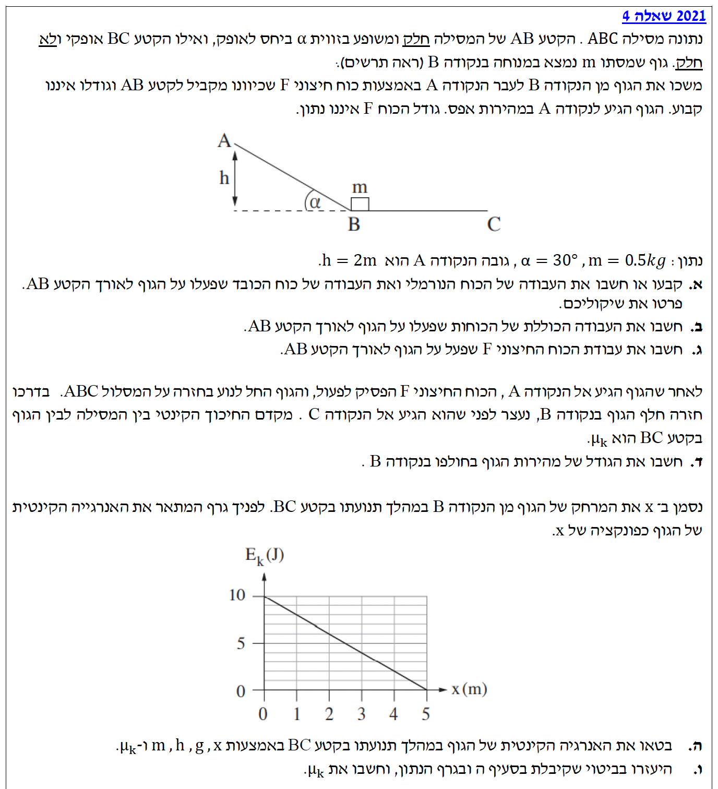
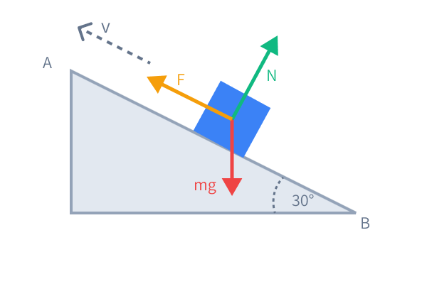
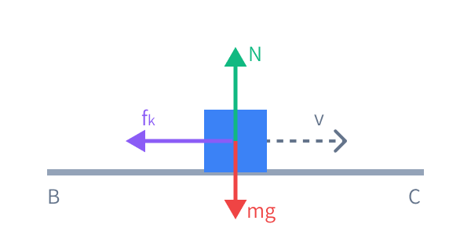

מסת הגוף: \(m = 0.5\text{ kg}\) (היחידות תקינות, אין צורך בהמרה).
זווית השיפוע: \(\alpha = 30^\circ\).
גובה נקודה A: \(h = 2\text{ m}\). הגוף מתחיל מנקודה B (גובה אפס) ומגיע ל-A.
תאוצת הנפילה החופשית: נקבע תמיד לערך החיובי \(g = 10\text{ m/s}^2\).
מצבי מהירות (בשלב הראשון): הגוף מתחיל במנוחה בנקודה B (\(v_B = 0\)) ומגיע לנקודה A במהירות אפס (\(v_A = 0\)).
חיכוך: קטע AB חלק (\(\mu = 0\)), קטע BC בעל חיכוך קינטי (\(\mu_k\)).

[תמונת השאלה המקורית]לא נמצאה תמונה בשם question-image.png באותה תיקייה.
סעיף א'
מה נתון: הגוף נמשך מקטע B ל-A. הקטע AB חלק. המרחק לאורך המישור אינו נתון ישירות אך ידוע הגובה \(h=2\text{ m}\). תנועת הגוף היא במעלה המישור המשופע.
מה מחפשים: את עבודת הכוח הנורמלי (\(W_N\)) ואת עבודת כוח הכובד (\(W_G\)) לאורך הקטע מ-B ל-A, כולל פירוט השיקולים.
נוסחאות ועקרונות בשימוש: \(W = F \cdot \Delta x \cdot \cos\theta\) (עבודה של כוח קבוע)
\(U_G = mgh\) (אנרגיה פוטנציאלית כובדית)
עיקרון עבודת כוח משמר: עבודת כוח הכובד שווה למינוס השינוי באנרגיה הפוטנציאלית הכובדית: \(W_G = -\Delta U_G\)

תרשים כוחות לגוף הנמשך במעלה המישור.
פתרון צעד-אחר-צעד:
עבודת הכוח הנורמלי: הכוח הנורמלי פועל תמיד במאונך למשטח, ואילו ההעתק הוא לאורך המשטח. לכן הזווית ביניהם היא \(90^\circ\).
\[ W_N = N \cdot \Delta x \cdot \cos(90^\circ) = N \cdot \Delta x \cdot 0 = 0\text{ J} \]
עבודת כוח הכובד: נחשב באמצעות השינוי באנרגיה הפוטנציאלית (מנקודה B לגובה A). הגובה ההתחלתי הוא \(h_B = 0\) והגובה הסופי הוא \(h_A = 2\text{ m}\).
עבודת הכוח הנורמלי היא \(0\text{ J}\).
עבודת כוח הכובד היא \(-10\text{ J}\).
הערת מורה:
שימו לב להסבר הפיזיקלי: הגוף עולה למעלה, כלומר כיוון התנועה שלו מנוגד לרכיב כוח הכובד שמושך אותו למטה לאורך המדרון. כאשר כוח מנוגד לכיוון התנועה, העבודה שלו היא שלילית! אין צורך למצוא את המרחק לאורך המדרון, עבודת כוח הכובד תלויה רק בהפרש הגבהים.
סעיף ב'
מה נתון: הגוף התחיל ממנוחה בנקודה B (\(v_B=0\)) והגיע למנוחה בנקודה A (\(v_A=0\)).
מה מחפשים: את העבודה הכוללת (\(W_{\text{total}}\)) שנעשתה על הגוף לאורך הקטע AB.
הערת מורה:
זה אולי מרגיש מוזר ש"עשינו עבודה אבל התוצאה היא אפס". חשוב להבין: הכוח החיצוני עשה עבודה חיובית, כוח הכובד עשה עבודה שלילית (הפריע). בסך הכל, עבודת כל הכוחות קיזזה אחד את השני, ולכן לא נוצר שום שינוי במהירות של הגוף מההתחלה ועד הסוף.
סעיף ג'
מה נתון: מתוך הסעיפים הקודמים מצאנו: \(W_N = 0\text{ J}\), \(W_G = -10\text{ J}\), \(W_{\text{total}} = 0\text{ J}\). הכוח F הוא כוח לא קבוע.
מה מחפשים: את עבודת הכוח החיצוני F לאורך הקטע AB (\(W_F\)).
נוסחאות ועקרונות בשימוש: העבודה הכוללת היא סכום העבודות של כל הכוחות הפועלים על הגוף: \(W_{\text{total}} = W_G + W_N + W_F\)
פתרון צעד-אחר-צעד:
נציב את הנתונים שמצאנו למשוואת העבודה הכוללת:
\[ 0 = (-10) + 0 + W_F \]
\[ W_F = 10\text{ J} \]
עבודת הכוח החיצוני F היא \(10\text{ J}\).
הערת מורה:
שאלה נהדרת! שימו לב שהשאלה ציינה שהכוח \(F\) **אינו קבוע**. לכן לא היינו יכולים להשתמש בנוסחה \(W=F\Delta x\) כדי למצוא אותו (כי מותר להשתמש בה רק לכוח קבוע). אבל, משפט עבודה-אנרגיה עובד תמיד, גם לכוחות משתנים! דרך אגב, העבודה שווה בדיוק לאנרגיה הפוטנציאלית שהגוף צבר.
סעיף ד'
מה נתון: הכוח F מפסיק לפעול. הגוף משתחרר ממנוחה מנקודה A (\(v_A=0\), \(h_A=2\text{m}\)) ומחליק חזרה במורד המישור החלק עד לנקודה B (\(h_B=0\)).
מה מחפשים: את גודל מהירות הגוף כאשר הוא חולף בנקודה B בדרכו חזרה מטה (\(v_B\)).
נוסחאות ועקרונות בשימוש: מכיוון שהמשטח חלק, רק כוח הכובד (כוח משמר) עושה עבודה. לכן מתקיים חוק שימור אנרגיה מכנית: \(E_A = E_B\)\(E = E_K + U_G = \frac{1}{2}mv^2 + mgh\)
פתרון צעד-אחר-צעד:
נרשום את האנרגיה המכנית בכל נקודה:
בנקודה A: הגוף במנוחה, לכן יש רק אנרגיה פוטנציאלית.
גודל מהירות הגוף בנקודה B הוא \( \sqrt{40} \) או בקירוב \( 6.32\text{ m/s} \).
הערת מורה:
זכרו - גודל המהירות אינו תלוי בזווית השיפוע או באורך המסלול, אלא רק בהפרש הגבהים שמהם נפל הגוף (כל עוד אין חיכוך). כל האנרגיה הפוטנציאלית הומרה לאנרגיה קינטית.
סעיף ה'
מה נתון: הגוף נע כעת על הקטע האופקי BC. יש חיכוך קינטי (\(\mu_k\)). המרחק מנקודה B מסומן ב-\(x\). האנרגיה הקינטית בתחילת קטע זה (בנקודה B) חושבה בסעיפים הקודמים והיא \(E_{K,B} = 10\text{ J}\). הגובה לאורך כל הקטע BC הוא אפס (\(h=0\)).
מה מחפשים: לבטא את האנרגיה הקינטית של הגוף (\(E_K\)) כפונקציה של המרחק \(x\).
נוסחאות ועקרונות בשימוש: \(W_{\text{nc}} = \Delta E\) (עבודת כוחות לא משמרים) \(f_k = \mu_k N\) (כוח חיכוך קינטי) \(\Sigma F_y = 0 \Rightarrow N - mg = 0\) (שיווי משקל בציר אנכי על משטח אופקי)

תרשים כוחות לגוף הנע על המשטח האופקי המחוספס.
פתרון צעד-אחר-צעד:
תחילה נמצא את כוח החיכוך. מאחר שהגוף נע על משטח אופקי, הכוח הנורמלי שווה לכוח הכובד:
\[ N = mg \]
\[ f_k = \mu_k N = \mu_k mg \]
העבודה שמבצע כוח החיכוך לאורך מרחק \(x\) היא שלילית (כי הוא מנוגד לכיוון התנועה, זווית \(180^\circ\)):
\[ W_{f_k} = f_k \cdot x \cdot \cos(180^\circ) = -\mu_k mg x \]
לפי חוק עבודה-אנרגיה, עבודת כוח החיכוך (הכוח הלא משמר היחיד שעושה עבודה) שווה לשינוי באנרגיה המכנית. על המשטח האופקי הגובה הוא תמיד 0, לכן השינוי באנרגיה המכנית הוא רק השינוי באנרגיה הקינטית.
הביטוי לאנרגיה הקינטית: \( E_K(x) = 10 - \mu_k mg x \)
הערת מורה:
שימו לב שקיבלנו משוואה של קו ישר מהצורה \(y = mx + b\).
כאן \(y\) זה האנרגיה הקינטית, \(x\) זה המרחק, החיתוך עם ציר Y (הערך ההתחלתי \(b\)) הוא האנרגיה בנקודה B (שהיא \(10\text{ J}\)), והשיפוע של הגרף הוא המקדם של \(x\), כלומר: \((-\mu_k mg)\). זה יעזור לנו מאוד בסעיף הבא!
סעיף ו'
מה נתון: לפנינו גרף המתאר את האנרגיה הקינטית כפונקציה של \(x\). מהגרף נזהה שתי נקודות מדויקות על הקו הישר:
נקודת התחלה: \((x_1=0, y_1=10)\)
נקודת סיום (חיתוך עם ציר x): \((x_2=5, y_2=0)\)
מה מחפשים: לחשב את מקדם החיכוך הקינטי \(\mu_k\) באמצעות הביטוי מסעיף ה' ונתוני הגרף.
נוסחאות ועקרונות בשימוש: \(\text{Slope} = \frac{\Delta y}{\Delta x} = \frac{y_2 - y_1}{x_2 - x_1}\) (נוסחה לשיפוע קו ישר) הקשר מהסעיף הקודם: שיפוע הגרף מייצג את הביטוי הפיזיקלי של המקדם של \(x\), שהוא \(-\mu_k mg\).
הערת מורה:
קריאת שיפוע מתוך גרף והשוואתו לביטוי תאורטי היא מיומנות סופר-קריטית בבגרויות בפיזיקה! זהו הלב של מה שאנחנו קוראים לו "הפקת משמעות פיזיקלית מגרף". זכרו שלמקדם חיכוך אין יחידות מידה.
נוסח השאלה המקורית
[תמונת השאלה המקורית]לא נמצאה תמונה בשם question-image.png.